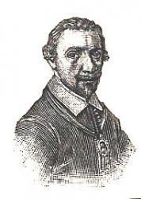

0059 0087 Comfort, Comfort Now My People _Johann
Olearius 安慰百姓 新普頌131 GENEVAN 42
▲
| 簡介
Comfort, Comfort Now My People |
| This 17th-century German paraphrase of
Isaiah 40:1–5 was one of the texts translated as part of the
19th-century British interest in German religious poetry. It is set here
to one of the most popular Genevan Psalter tunes, probably derived from
an earlier French folksong. |
|
|
|
|
1 Comfort, comfort, O my people,
speak of peace, now says our God.
Comfort those who sit in shadows,
mourning ’neath their sorrows’ load.
Speak unto Jerusalem
of the peace that waits for them.
Tell of all the sins I cover,
and that warfare now is over.
2 Hark, the voice of one who’s crying
in the desert far and near,
bidding all to full repentance,
since the kingdom now is here.
Oh, that warning cry obey!
Now prepare for God a way!
Valleys, rise in exaltation;
hills, bow down in adoration.
3 O make straight what long was crooked,
make the rougher places plain.
Let your hearts be true and humble,
as befits a holy reign.
For the glory of our God
now o’er earth is shed abroad.
And all flesh shall see the token
that God’s word is never broken.
Source: Voices Together
#212
|
"安慰、安慰我的百姓"，神應許平安來臨，
雖困黑暗，雖負重壓，垂首無助得慰藉。
耶路撒冷聽宣告；平安早已在等候；
罪污洗淨、赦免、寬恕，爭戰苦難今已止息
曠野沙漠遠處近處，先驅呼聲廣流傳，
催促我們悔改認罪，上主天國在面前，
聽從警告快順服，為神鋪路不遲延；
深谷低漥*隆起相連，大小山岡俯伏相牽。
高高低低修直鋪填，崎崎嶇嶇變平原，
心若謙卑滿是真誠，配稱神聖國度民，
主的榮耀照四方，發放光輝遍全地，
凡有血氣必同看見，上主聖言永遠長存。
阿們。
|
https://hymnary.org/hymn/CWH2021/page/268


|
| |
|
https://hymnary.org/text/comfort_comfort_now_my_people
Scripture References:
st. 1 = Isa. 40:1-2
st. 2 = Isa. 40:3-4
st. 3 = Isa. 40:3-5
This song is a versification of Isaiah 40:1-5, the passage that opens the final
large group of prophecies in Isaiah 40-66. Many of these prophecies express
consolation and hope that Judah's exile in Babylon is almost over. That is
certainly the tone of 40: 1-5-words of comfort forecasting a new reign but also
words that call for proper preparation–that is, repentance.
Johannes Olearius (b. Halle, Germany, 1611; d. Weissenfels, Germany, 1684)
originally versified the passage in German in honor of Saint John the Baptist
Day and published it in his Geistliche Singe-Kunst (1671), a collection
of more than twelve hundred hymns–three hundred of them by Olearius himself.
Born into a family of Lutheran theologians, Olearius received his education at
the University of Wittenberg and later taught theology there. He was ordained a
Lutheran pastor and appointed court preacher to Duke August of
Sachsen-Weissenfels in Halle and later to Duke Johann Adolph in Weissenfels.
Olearius wrote a commentary on the entire Bible, published various devotional
books, and produced a translation of the Imitatio Christi by Thomas a
Kempis. In the history of church music Olearius is mainly remembered for his
hymn collection, which was widely used in Lutheran churches.
Olearius's text was translated into English by Catherine Winkworth (b. Holborn,
London, England, 1827; d. Monnetier, Savoy, France, 1878) and published in her Chorale
Book for England (1863); the first line originally read "Comfort, Comfort
Ye My People." Winkworth is well known for her English translations of German
hymns; her translations were polished and yet remained close to the original.
Educated initially by her mother, she lived with relatives in Dresden, Germany,
in 1845, where she acquired her knowledge of German and interest in German
hymnody. After residing near Manchester until 1862, she moved to Clifton, near
Bristol.
A pioneer in promoting women's rights, Winkworth put much of her energy into the
encouragement of higher education for women. She translated a large number of
German hymn texts from hymnals owned by a friend, Baron Bunsen. Though often
altered, these translations continue to be used in many modern hymnals. Her work
was published in two series of Lyra Germanica (1855, 1858) and in The
Chorale Book for England (1863), which included the appropriate German tune
with each text as provided by Sterndale Bennett and Otto Goldschmidt. Winkworth
also translated biographies of German Christians who promoted ministries to the
poor and sick and compiled a handbook of biographies of German hymn authors, Christian
Singers of Germany (1869).
Liturgical Use:
Traditional during Advent as applicable to Isaiah's and John the Baptist's calls
to repentance.
--Psalter Hymnal Handbook
“Comfort, Comfort Now My People” is a paraphrase of Isaiah 40:1-5, in which the
prophet looks forward to the coming of Christ. More specifically, the coming of
the forerunner of Christ – John the Baptist – is foretold. Though Isaiah's voice
crying in the desert is anonymous, the third stanza ties this prophecy and one
from Malachi (Malachi 4:5) to a New Testament fulfillment. “For Elijah's voice
is crying In the desert far and near” brings to mind Jesus' statement, “'But I
tell you that Elijah has already come, ….' Then the disciples understood that he
was speaking to them of John the Baptist.” (Matthew 17:12, 13 ESV)
Text:
The original German text was written by Johannes Olearius in 1671 for St. John
the Baptist's Day, June 24. He published it in his huge collection of hymns, Geistliche
Singe-Kunst, as one of about three hundred hymns he had written (the
collection contained more than twelve hundred hymns in its first edition).
Catherine Winkworth translated the text into English in 1863. The hymn has four
stanzas, though some hymnals omit the second, which focuses on God's wrath as
punishment for sin. Some hymnals edit gently for modernization, but except for
those hymnals that somewhat de-emphasize the theme of sin and God's wrath, the
meaning is not significantly altered.
Tune:
The tune associated with this hymn has two names: GENEVAN 42 and FREU DICH SEHR.
Which title is used depends on the church tradition through which a particular
hymnal acquired the tune. Those from a Reformed background call it GENEVAN 42,
because it was used for Psalm 42 in the French Genevan Psalter. It is likely
that Louis Bourgeois either composed or adapted this tune for the Genevan
Psalter. It first appeared here in 1551. Lutherans call the tune FREU DICH SEHR
because those are the opening words of a funeral hymn that this tune was paired
with in Rhamba's Harmoniae sacrae (1613). J. S. Bach also used this
tune in seven of his cantatas.
When/Why/How:
This hymn is usually sung during Advent, although it could also be sung for any
service where the sermon is on Isaiah 40:1-5 or on John the Baptist, as was the
original intent of the author. Keep a sprightly tempo to uphold the joyous
nature of the text. The leader and accompanist should clearly indicate the pulse
of the hymn, since it alternates regularly between two groups of three beats and
three groups of two beats.
Because “Comfort, Comfort Now My People” is often sung only once a year, it
might be wise to use this hymn as a prelude before the congregation is asked to
sing it, for familiarity's sake and because of the shifting meter. John Ferguson
has written a short, delicate setting for organ as part of his “An
Advent Triptych” that could be used for an extended hymn introduction.
Another more substantial setting is found in “Four
Organ Preludes for Advent” by Kenneth T. Kosche. The lilting main theme of
this setting recalls the hymn tune, which appears phrase by phrase. A brass
quintet arrangement of FREU DICH SEHR by David Giardiniere is included in his
collection “In
Dulci Jubilo”. The optional organ merely supports the brass, which makes
this suitable for situations where the entire quintet is not available, or where
additional musical support is advisable. A congregational accompaniment for
organ and handbells is found in “Festive
Hymn Settings, Set 1” by Michael Burkhardt.
Tiffany Shomsky,
Hymnary.org
Composer: Claude Goudimel; Composer:
Louis Bourgeois (1551)
Published in 196
hymnals
Notes
Louis Bourgeois (PHH
3) composed or adapted this tune for Psalm 42 for the Genevan
psalter. The 1564 harmonization by Claude Goudimel (PHH
6) originally placed the melody in the tenor. An alternate
harmonization with descants by Johann Crüger (PHH
42) can be found opposite 41 in the Psalter Hymnal. (See
also notes at PHH
42.)
Since the character of
Isaiah 40 is very different from the lament of Psalm 42, for which the
tune was written, the tempo should be faster here than at 42. Sing with
a buoyant and lilting rhythm. Organists will find preludes to this tune
under GENEVAN 42 in Dutch works or under FREU DICH SEHR in German works.
--Psalter Hymnal
Handbook, 1988

https://youtu.be/119C58F3dnQ
"Comfort, Comfort Now My People" (GENEVAN 42)
WERDE MUNTER

Notes
JESU JOY is a form of
the tune WERDE MUNTER, MEIN GEMUETE by Johann Schop (b. Hamburg [?],
Germany, c. 1595; d. Hamburg, 1667). In 1614 Schop was appointed court
musician in the Hofkapelle at Wolfenbüttel. A virtuoso violinist, he
also played the lute, cornetto, and trombone. He became a musician for
King Christian IV of Denmark in Copenhagen in 1618.
When the plague swept
through Copenhagen, Schop fled to find employment elsewhere. In 1621 he
settled in Hamburg, where he became the principal violinist for the city
and organist at St. James Church. Exposed to various national music
styles in Hamburg and in his travels, Schop became a cosmopolitan
composer, well known for his dance suites, church concertos, and songs.
He composed forty-nine new melodies for Johann Rist's Himmlische
Lieder (1641-1643), including WERDE MUNTER (1642).
The melody gained
popularity through Johann S. Bach's (PHH
7) famous harmonization of the tune in his Cantata No. 147 (1723).
JESU JOY is a rounded bar form (AABA'). In communities where this tune
is well known, it would be delightful to use the Bach organ arrangement
as introduction, interlude (between the two stanzas), and postlude to
the singing of the psalm; Bach's setting is in G major, and the hymnal
setting is in F, so one or the other needs to be transposed to combine
them. A song leader can conduct the entrances for the congregation.
--Psalter Hymnal
Handbook
https://hymnary.org/hymn/LUYH2013/page/68

Comfort, comfort ye my people
Translator: Catherine Winkworth; Author:
Johann Olearius (1671)
Tune: GENEVAN 42
Scripture Songs
Published in 116
hymnals
https://www.abhin.com/piece/comfort-comfort-ye-my-people/
曠野施洗約翰宣告(曠野施浸約翰宣告)
Comfort, Comfort Ye My People (會眾詩)
ABHIN DECEMBER 9, 2020
Composer: Catherine Winkworth, Genevan Psalter, Johannes Olearius, 梁逸軒
Parts: 會眾, 鋼琴, 風琴
Difficulty: 中
Genre: 將臨聖誕
曠野施浸約翰宣告 (以賽亞書40:1-5，路加福音3:2-6)
Comfort, Comfort Ye My People
曲：Genevan Psalter 《日內瓦韻文詩篇》
調：PSALM 42
格律：8.7.8.7.7.7.8.8.
原詞：Johannes Olearius, 1671; Tr. Catherine Winkworth 1863, alt.
粵譯：梁逸軒2020，修2021
百姓得主應許安慰，
和平話語響天際；。
縱處黑暗，縱遇困難，
仇敵辱侮，施詭計。
願錫安聽宣告聲：
「賜你安慰與太平，
罪污潔淨，惡果寬恕，
患難、戰禍，主已獲勝！」
曠野施洗約翰#宣告，
無論近、遠當知道：
「悔改更新，惡念盡除，
期待父國即將到！」
順服、警戒，奉神令，
削去山岡，聖路成，
謬曲變直，罅隙充滿，
預備救贖歸正路徑。
拓展崎嶇、惡劣路途，
平路、直徑終廣佈，
我心謙卑 ，渴望、熱誠，
榮耀上帝佳音報！
願萬邦興起、發光！
救世主降，永是王！
上主救贖，眼睛親見：
道入血肉，擊破罪網！
#浸信宗傳統可使用「施浸約翰」及「接受施浸」。
v2修改於2021年4月26日
關於施洗約翰(施浸約翰)的歌曲委實不多。這首詩歌將以賽亞書的應許和施洗約翰的工作對應，最後一節則將之拉到唱頌者的時代，讓我們也加入成為修直上主的路的先鋒，預備道成肉身基督的誕降。
編曲採用了活潑的敲擊樂配合歌曲，為將臨期的嚴肅帶來一點喜悅。歌曲特別適合每年將臨期第二主日唱頌，回應當天有關施洗約翰的經課。
https://wemp.app/posts/eb742460-b3c2-48a8-8f96-bf21107f45e6
风的声音探索圣乐的天地
将临期圣乐《安慰百姓》
音频：(建议使用耳机收听）
音频为无伴奏合唱，录制于洛杉矶圣约翰主教座堂。

视频版为管风琴和鼓伴奏，较好地诠释了这首诗歌所表达的欢快气氛。由内布拉斯加州普利茅斯教会诗班献唱，因腾讯视频无法上传，请点击文末 阅读原文 收看。
参考经文：赛40：1-5
你们的神说，你们要安慰，安慰我的百姓。要对耶路撒冷说安慰的话，又向他宣告说，他争战的日子已满了，他的罪孽赦免了，他为自己的一切罪，从耶和华手中加倍受罚。有人声喊着说，在旷野预备耶和华的路，（或作在旷野有人声喊着说，当预备耶和华的路），在沙漠地修平我们神的道。一切山洼都要填满，大小山冈都要削平，高高低低的要改为平坦，崎崎岖岖的必成为平原。耶和华的荣耀必然显现，凡有血气的，必一同看见，因为这是耶和华亲口说的。
诗歌背景：
这是一首作于十七世纪的德国圣诗，也是很多教会在将临期每年必唱的圣诗之一。本诗的作者是德国圣玛丽教堂的牧师约翰·奥利瑞斯(JohannOlearius)(1611-1684)，他同时是一位学者和圣诗作家，奥利瑞斯编纂了被称为十七世纪德国最重要和最伟大的赞美诗集《
Geistliche Singe-Kunst》 。

本诗是作者1671年为圣约翰洗礼堂所作，1863年英国著名的圣诗翻译家凯瑟琳·温克沃斯（Catherine
Winkworth）将这首诗歌翻译成英文。本文所引用的中文翻译由郑翰龙老师翻译，他是香港圣乐服务社的创办人之一。
本诗的曲调名称有两个，改革宗背景的人称呼它GENEVAN 42，是因为它在法文日内瓦诗篇集的第42首，路得宗教徒称呼奇为FREU DICH
SEHR，因为这是一首葬礼赞美诗的开场白。巴赫亦曾在他的七首康塔塔中使用过这首曲调。
原诗共有四节歌词，多数诗集中删除了第二节，只有三节。
“安慰，安慰我的百姓”是以赛亚书40章1-5节的一句话，先知以赛亚期待基督的降临，更确切的说，这段经文指向的是基督的先锋-施洗者约翰将要到来。虽然经文中“有人声喊着说”，先知并没指名这个人是谁，但第三节将这一预言和玛拉基(玛拉基福音4：5)的预言联系在一起。因为以利亚的声音在遥远的沙漠里哭泣，“让人想起耶稣的话”，‘但我告诉你，以利亚已经来了，…。’门徒就知道耶稣是指着施洗的约翰对他们说的。(马太福音17：12，13
ESV)

颂唱这首诗歌要保持轻快的节奏，因为上帝宣告犹大的罪已经得蒙赦免，弥赛亚将会来到，所以这是一首欢快报喜性质的诗歌。在排练时，诗班指挥和伴奏者应该清楚地指出赞美诗的节奏变化，因为它在两组三拍和三组两拍之间有规律地交替。
中文歌词：
"安慰、安慰我的百姓"，
神应许平安来临， 虽困黑暗，虽负重压，
垂首无助得慰藉。 耶路撒冷听宣告；
平安早已在等候； 罪污洗净、赦免、宽恕，
争战苦难今已止息
旷野沙漠远处近处，
先驱呼声广流传， 催促我们悔改认罪，
上主天国在面前， 听从警告快顺服，
为神铺路不迟延； 深谷低洼隆起相连，
大小山冈俯伏相牵。
高高低低修直铺填，
崎崎岖岖变平原， 心若谦卑满是真诚，
配称神圣国度民， 主的荣耀照四方，
发放光辉遍全地， 凡有血气必同看见，
上主圣言永远长存。
阿们。
乐谱：
Notes
Scripture References:
st. 1 = Isa. 40:1-2
st. 2 = Isa. 40:3-4
st. 3 = Isa. 40:3-5
This song is a
versification of Isaiah 40:1-5, the passage that opens the final large
group of prophecies in Isaiah 40-66. Many of these prophecies express
consolation and hope that Judah's exile in Babylon is almost over. That
is certainly the tone of 40: 1-5-words of comfort forecasting a new
reign but also words that call for proper preparation–that is,
repentance.
Johannes Olearius (b.
Halle, Germany, 1611; d. Weissenfels, Germany, 1684) originally
versified the passage in German in honor of Saint John the Baptist Day
and published it in his Geistliche Singe-Kunst (1671), a
collection of more than twelve hundred hymns–three hundred of them by
Olearius himself. Born into a family of Lutheran theologians, Olearius
received his education at the University of Wittenberg and later taught
theology there. He was ordained a Lutheran pastor and appointed court
preacher to Duke August of Sachsen-Weissenfels in Halle and later to
Duke Johann Adolph in Weissenfels. Olearius wrote a commentary on the
entire Bible, published various devotional books, and produced a
translation of the Imitatio Christi by Thomas a Kempis. In the
history of church music Olearius is mainly remembered for his hymn
collection, which was widely used in Lutheran churches.
Olearius's text was
translated into English by Catherine Winkworth (b. Holborn, London,
England, 1827; d. Monnetier, Savoy, France, 1878) and published in her Chorale
Book for England (1863); the first line originally read "Comfort,
Comfort Ye My People." Winkworth is well known for her English
translations of German hymns; her translations were polished and yet
remained close to the original. Educated initially by her mother, she
lived with relatives in Dresden, Germany, in 1845, where she acquired
her knowledge of German and interest in German hymnody. After residing
near Manchester until 1862, she moved to Clifton, near Bristol.
A pioneer in promoting
women's rights, Winkworth put much of her energy into the encouragement
of higher education for women. She translated a large number of German
hymn texts from hymnals owned by a friend, Baron Bunsen. Though often
altered, these translations continue to be used in many modern hymnals.
Her work was published in two series of Lyra Germanica (1855,
1858) and in The Chorale Book for England (1863), which
included the appropriate German tune with each text as provided by
Sterndale Bennett and Otto Goldschmidt. Winkworth also translated
biographies of German Christians who promoted ministries to the poor and
sick and compiled a handbook of biographies of German hymn authors, Christian
Singers of Germany (1869).
Liturgical Use:
Traditional during Advent as applicable to Isaiah's and John the
Baptist's calls to repentance.
--Psalter Hymnal
Handbook

“Comfort, Comfort Now My People” is a paraphrase of Isaiah 40:1-5, in which the
prophet looks forward to the coming of Christ. More specifically, the coming of
the forerunner of Christ – John the Baptist – is foretold. Though Isaiah's voice
crying in the desert is anonymous, the third stanza ties this prophecy and one
from Malachi (Malachi 4:5) to a New Testament fulfillment. “For Elijah's voice
is crying In the desert far and near” brings to mind Jesus' statement, “'But I
tell you that Elijah has already come, ….' Then the disciples understood that he
was speaking to them of John the Baptist.” (Matthew 17:12, 13 ESV)
Text:
The original German text was written by Johannes Olearius in 1671 for St. John
the Baptist's Day, June 24. He published it in his huge collection of hymns,
Geistliche Singe-Kunst, as one of about three hundred hymns he had written (the
collection contained more than twelve hundred hymns in its first edition).
Catherine Winkworth translated the text into English in 1863. The hymn has four
stanzas, though some hymnals omit the second, which focuses on God's wrath as
punishment for sin. Some hymnals edit gently for modernization, but except for
those hymnals that somewhat de-emphasize the theme of sin and God's wrath, the
meaning is not significantly altered.
Tune:
The tune associated with this hymn has two names: GENEVAN 42 and FREU DICH SEHR.
Which title is used depends on the church tradition through which a particular
hymnal acquired the tune. Those from a Reformed background call it GENEVAN 42,
because it was used for Psalm 42 in the French Genevan Psalter. It is likely
that Louis Bourgeois either composed or adapted this tune for the Genevan
Psalter. It first appeared here in 1551. Lutherans call the tune FREU DICH SEHR
because those are the opening words of a funeral hymn that this tune was paired
with in Rhamba's Harmoniae sacrae (1613). J. S. Bach also used this tune in
seven of his cantatas.
When/Why/How:
This hymn is usually sung during Advent, although it could also be sung for any
service where the sermon is on Isaiah 40:1-5 or on John the Baptist, as was the
original intent of the author. Keep a sprightly tempo to uphold the joyous
nature of the text. The leader and accompanist should clearly indicate the pulse
of the hymn, since it alternates regularly between two groups of three beats and
three groups of two beats.
Because “Comfort, Comfort Now My People” is often sung only once a year, it
might be wise to use this hymn as a prelude before the congregation is asked to
sing it, for familiarity's sake and because of the shifting meter. John Ferguson
has written a short, delicate setting for organ as part of his “An Advent
Triptych” that could be used for an extended hymn introduction. Another more
substantial setting is found in “Four Organ Preludes for Advent” by Kenneth T.
Kosche. The lilting main theme of this setting recalls the hymn tune, which
appears phrase by phrase. A brass quintet arrangement of FREU DICH SEHR by David
Giardiniere is included in his collection “In Dulci Jubilo”. The optional organ
merely supports the brass, which makes this suitable for situations where the
entire quintet is not available, or where additional musical support is
advisable. A congregational accompaniment for organ and handbells is found in
“Festive Hymn Settings, Set 1” by Michael Burkhardt.
Tiffany Shomsky,
Hymnary.org
https://www.reformedworship.org/article/september-1989/hymn-month
December
Psalter Hymnal 194
Rejoice in the Lord 169
Trinity Hymnal 148
Isaiah 40 is
often read and sung during the Advent season. It's a passage that speaks
of the peace and comfort that the coming Messiah will bring. The prophet
encourages the people of Israel to prepare a way for the Lord: to "make
straight in the desert a highway for our God" (RSV). The first three
movements of Handel's Messiah are taken from Isaiah 40:1-5.
The hymn
"Comfort, Comfort Now My People," written by Johannes Olearius in 1641,
is a paraphrase of Isaiah 40:1-5. It captures the Advent theme, of
looking forward to and preparing for the coming of the Messiah.
Especially striking is the personification used to conclude the second
verse: "Let the valleys rise to meet him and the hills bow down to greet
him."
In addition to
being a hymn writer, Johannes Olearius was at one time a court chaplain,
a professor of philosophy, and the author of a commentary on the entire
Bible. He published "Comfort, Comfort Now My People," along with three
hundred more of his hymns, in one of the most important German hymnbooks
of the seventeenth century.
Almost two
centuries later the English scholar and educator Catherine Winkworth
translated the hymn from German into English. During her lifetime she
published several volumes of translated German hymns. Among her most
famous are "Praise to the Lord, the Almighty," "Jesus, Priceless
Treasure," and "Now Thank We All Our God."
The tune for
this hymn was composed by Louis Bourgeois, choirmaster for John Calvin
in Geneva, whose responsibilities included compiling, composing, and
arranging music for the Genevan Psalter. Much credit can be given to
Louis Bourgeois for the many sturdy psalm tunes that are still being
sung in many parts of the world today, over four centuries after these
psalms were first composed and sung.
When
introducing this hymn to the congregation, take great care to avoid
singing it too slowly. The nature of the text (the coming of the
Messiah) and the rhythm of the tune suggest that this hymn might be sung
as a joyful dance.
The
harmonization with descants given here is by Johann Criiger, who wrote
choral and instrumental arrangements of Genevan psalm tunes in Psalmodia
Sacra (1657). The descants, which are found with Psalm 42 in the Psalter
Hymnal, may be played by flutes, recorders, or violins.
There is a
wealth of organ music based on this tune, often under the German title Freu
dich sehr. In addition, there are a number of good choral settings
of the hymn (see below), which choirs could sing in preparation for, or
in place of, the congregation singing the hymn.
"Comfort,
Comfort O My People" by J.S. Bach, ed. Klammer. SATB, string
quartet, organ continuo. GIA, 1987. G-3112.12 pages. $.90. First verse
unison, second verse 4-part chorale. Music taken from cantatas nos. 13
and 194. (Bach used the tune in eight of his cantatas.)
"Comfort,
Comfort Ye My People" by C. Goudimel, ed. Heider. SATB, a capella.
GIA, 1986. G-2893.14 pages. $.90. First and third verses
contrapun-tally set by Goudimel. Second verse chorale-like setting by
Claude Lejeune.
"Comfort
Ye My People" by Paul Bunjes. SATB, string quartet and or organ.
Concordia, 1957.98-1388.8 pages. $.75. Four-part chorale setting with
string interludes between each phrase.
"Comfort,
Comfort" by John Ferguson. SATB, with optional instruments
(piccolo, 2 B-flat clarinets, and tambourine). Augsburg, 1897.11-2381. 4
pages. $.75. Four-part chorale setting with instrumental interludes
between each stanza. Featured on the cassette In the Presence of Your
People, available from CRC Publications.
January
Psalter Hymnal 370
We would all
like to believe that when Jesus was born, the whole world somehow sensed
the presence of the Son of God on earth and stopped to marvel at this
wonderful event. That, of course, was not the way it happened. Few
people were aware of Jesus' birth.
A wider
understanding of Jesus' nature and mission came years later, during his
ministry. Through himself he revealed God to the world. The season of
Epiphany recalls those events in the life of Christ in which he was made
manifest to the world.
"The
King of Glory" was written by Father Willard Jabusch for a parish
folk-music group in Elmwood Park, Illinois. On a trip to the Holy Land,
Jabusch learned this old Israeli folk song and decided to write new
words for it. The refrain repeats the Epiphany theme of the "King of
Glory," Christ revealing himself to the nations. The four stanzas in
turn speak of the prophecy of Christ, his earthly mission, crucifixion,
and resurrection.
Children will
love to sing this hymn and will enjoy playing a variety of rhythm
instruments to accompany the refrain (the descant could be sung on the
refrain following the last stanza). Allowing children to teach the
congregation the hymn will help them understand how important they are
as contributing members of God's worshiping family.
February
The Hymnbook 370
Psalter Hymnal 72
Rejoice in the Lord 232
Trinity Hymnal 224
Isaac Watts
(1674-1748) was one of the earliest and most prominent hymn writers to
"Christianize" the psalms. In fact, he is known as the Father of English
hymnody. In Watts's day most churches permitted their congregations to
sing only psalms— no hymns. Watts became impatient with some of the poor
poetry based on the psalms and with being unable to sing about the
Christian faith in New Testament terms, so he decided to "Christianize"
some of the psalms.
His
"Christianized" psalms opened the door in many churches to accepting
hymns in public worship. Most Christians are familiar with his "Jesus
Shall Reign," but perhaps not all are aware that this is Watts's free
paraphrase of Psalm 72.
"Hail to the
Lord's Anointed" is another paraphrase of Psalm 72, written almost a
century later by James Montgomery (1771-1854). Although not as popular
as "Jesus Shall Reign," "Hail to the Lord's Anointed" is a closer
paraphrase of Psalm 72, especially with Bert Polman's revision for the Psalter
Hymnal.
James
Montgomery was born of Moravian parents who later served as missionaries
to the West Indies. When both his parents died, Montgomery was sent to a
Moravian school in England. He began studying for the ministry but soon
became frustrated and turned to his first love, poetry. For most of his
life, Montgomery worked as a journalist and editor of a small newspaper,
the Sheffield Iris, which
published many of his over four hundred hymns. Among the most famous of
his hymns are "Angels from the Realms of Glory" and "According to Thy
Gracious Word."
Many churches
celebrate mission emphasis during Epiphany, a most appropriate time to
demonstrate that God reveals himself to the world through his people.
"Hail to the Lord's Anointed" focuses on the mission aspect of the
Epiphany theme. It speaks of God's rule over all the nations (st. 2 and
st. 6) and the desert tribes and foreign kings who pay tribute to him
(st. 3).
Your
congregation will enjoy learning this hymn. The opening measure is very
proclamatory, and the bright melody has the necessary repetitions to
facilitate learning. The hymn concertato (see insert in this issue of RW)
includes a soprano descant, a brass accompaniment, an alternate
harmonization, and a brass fanfare that can be used in whole or in part
throughout the month to provide variety from Sunday to Sunday.
上次為了研究
一領一之歌，在網路上搜尋打簡譜的方法，結果找到這一篇甚為實用的
簡譜製作文章，主要是安裝好字型後就可以在應用軟體上打簡譜，該文�堶惘釩亄M楚的字型安裝方法的介紹。
要安裝的有下列兩款字型：
Simpmusicbase.ttf (基本簡譜符號)
Simpmusicaccent.ttf (表情符號)
其中基本簡譜符號主要是用來輸入簡譜中的音符、小節線等基本記號，表情符號則是用來輸入音符列上方的各種輔助記號如連結線、強弱、裝飾音...等等。但是剛開始試時，還是有點摸不到頭緒，主要是找不到鍵盤與符號的對應關係。摸索了一陣後，我整理出下面的鍵盤對應關係及心得，希望對用的到的人有點幫助：
首先請看一下鍵盤最上方的第一排，當你把應用程式(如word)�堛漲r型切換到
SimpMusic Base時，就可以得到如下的簡譜符號：
也就是說如果你按下"1"-"7"就可以得到簡譜�堛漱丰．o-Si的音，按下"9"的話可以得到附點，按住shift鍵再按"1"，也就是原本要輸入"!"的方式，就可以得到高音的Do。以此類推，就不難明暸以下第二、三、四排鍵盤字元與簡譜符號的對應關係了。
眼尖的人應該已經發現，所有和Do有關的輸入，都是對應到1、q、a、z這4個字元上，也就是鍵盤左邊的第一行按鍵，而第二行按鍵(2wsx)則是對應到Re，以此類推。這種安排可以加快音符的輸入速度。比如說如果你要輸入一個1/4拍的Sol，你只要先找到音高(5tgb那一行)，然後找到拍子(該行第三個字元是1/4拍，也就是g字元)，就可以得到一個1/4拍的Sol。
既然每一個字元都可以代表一個簡譜符號，那按下大寫鍵的話應該可以得到不同的符號吧?沒錯！大寫字母所代表的符號整理如下，請參考。
以上大致就可以包括一般常用的簡譜音高和拍號及其他符號了。且慢！還有很常用的小節線，好像還沒出現?原來它躲在鍵盤右方的標點符號區，而且就是使用直線符號的那個鍵，應該是為了符合一般人的直覺吧?
還有也是很常用的降記號和還原記號，在最後關頭也是很驚險的在這區出現了(升記號是大寫的L)。什麼，還是沒找到你要輸入的符號?那只好拉下Word的符號表(選擇"插入/符號，然後把字型選為SimpMusic
Base)去點了。要不然它也可能是在另一個字型檔SimpMusic Accent�塈a！這個檔的字型我這次還沒用到，下次如果有心得了會再另外整理一篇，不過為了方便查閱，還是先把它的符號--字元對照表貼在這�堙G
02 安慰我的百姓 (Comfort
ye my people) 孫愛光博士
孫愛光博士：
接下來我們就要進入神劇〈彌賽亞〉有人聲的部分的開場。這首曲子是非常非常重要，因為一剛開始他就要宣告了。這首樂曲他用男高音來做一個很棒的一種宣告。這樣子的經文是出自於《以賽亞書》四十章一到三節：
你們的上帝說：你們要安慰，安慰我的百姓。要對耶路撒冷說安慰的話，又向她宣告說，她爭戰的日子已滿了；她的罪孽赦免了；她為自己的一切罪，從耶和華手中加倍受罰。有人聲喊着說：在曠野預備耶和華的路，在沙漠地修平我們上帝的道。
這個是第三首樂曲裡面男高音的宣告。在男高音宣告這首樂曲的時候，是用宣敘調的方式。，怎麼說呢？我們剛開始有個很安靜的旋律進來，男高音就會說了 Comfort Ye
。這首樂曲裡面通常我們不太會讓男高音按照拍子唱，而會怎麼樣呢？讓男高音來宣示他對世人要講的話。所以 Comfort Ye
這樣子的一個句子唱完之後，我們的指揮才會開始開始下音樂。這首樂曲一定要讓男高音唱得非常有威嚴，因為它就像神在宣告一些事情一樣。
這首樂曲裡，韓德爾後來的版本用了許許多多的延長記號，那個延長記號的段落就是男高音他要講什麼，告訴我們世人你聽到了這樣的宣告，然後我們的樂團再慢慢的很平靜的帶出他音樂要走的步伐。
在最後一段的時候，他非常非常的激動地說，在曠野裡面有人喊著說：預備主的道路啊，在沙漠地修平我們上帝所要走的道路。
所以這個時候，我們指揮者可以讓男高音宣示性的、很高昂的能夠唱出來，我們的樂團才跟著他下拍子。
所以這樣子的東西，有一點點像歌劇裡面的情節，會有一點點激動。我們的樂團要配合他的歌詞，配合他高昂的音樂而去下拍。我想這是第一首裡面韓德爾要帶給我們非常寶貴的一些訊息，因為第三首會馬上接到第四首。第四首還是男高音要宣佈其他的事情。
經文：以賽亞書 40:1-3
你們的 神說，你們要安慰，安慰我的百姓。 要對耶路撒冷說安慰的話，又向他宣告說，他爭戰的日子已滿了，他的罪孽赦免了，他為自己的一切罪，從耶和華手中加倍受罰。
有人聲喊著說，在曠野預備耶和華的路（或作在曠野有人聲喊著說當預備耶和華的路），在沙漠地修平我們 神的道。
https://www.gbc.org.tw/index.php/20191204-devotion/
https://www.hkhymnsoc.org/wp-content/uploads/2017/11/why06booklet.pdf
{kind=link}
{kind=link}
{kind=link}
{kind=link}
{kind=link}
{kind=link}
{kind=link}